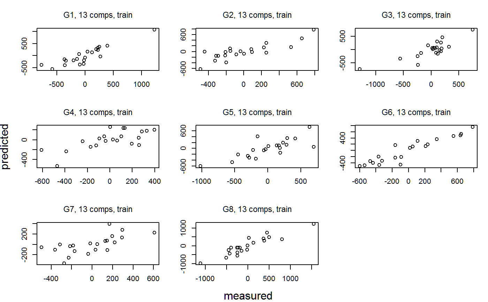
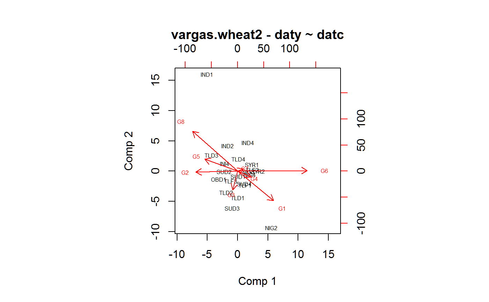
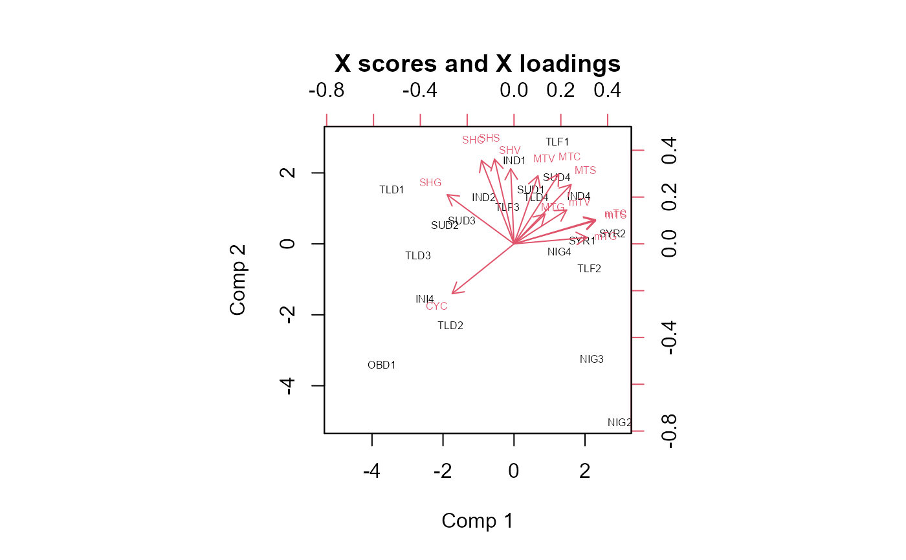

vargas.wheat2.RdThe yield of 8 wheat genotypes was measured in 21 low-humidity environments. Each environment had 13 covariates recorded.
data("vargas.wheat2.covs") data("vargas.wheat2.yield")
The 'vargas.wheat2.covs' data frame has 21 observations on the following 14 variables.
envenvironment
CYClength of growth cycle in days
mTCmean daily minimum temperature in degrees Celsius
MTCmean daily maximum temperature
SHCsun hours per day
mTVmean daily minimum temp during vegetative stage
MTVmean daily maximum temp during vegetative stage
SHVsun hours per day during vegetative stage
mTSmean daily minimum temp during spike growth stage
MTSmean daily maximum temp during spike growth stage
SHSsun hours per day during spike growth stage
mTGmean daily minimum temp during grainfill stage
MTGmean daily maximum temp during grainfill stage
SHGsun hours per day during grainfill stage
The 'vargas.wheat2.yield' data frame has 168 observations on the following 3 variables.
envenvironment
gengenotype
yieldyield (kg/ha)
Grain yields (kg/ha) for 8 wheat genotypes at 21 low-humidity environments grown during 1990-1994. The data is environment-centered and genotype-centered. The rows and columns of the GxE matrix have mean zero. The locations of the experiments were:
| OBD | Ciudad Obregon, Mexico, planted in December |
| SUD | Wad Medani, Sudan |
| TLD | Tlaltizapan, Mexico, planted in December |
| TLF | Tlaltizapan, Mexico, planted in February |
| IND | Dharwar, India |
| SYR | Aleppo, Syria |
| NIG | Kadawa, Nigeria |
Mateo Vargas and Jose Crossa and Ken Sayre and Matthew Renolds and Martha E Ramirez and Mike Talbot, 1998. Interpreting Genotype x Environment Interaction in Wheat by Partial Least Squares Regression, Crop Science, 38, 679--689. https://doi.org/10.2135/cropsci1998.0011183X003800030010x
Data provided by Jose Crossa.
# \dontrun{ library(agridat) libs(pls,reshape2) data(vargas.wheat2.covs) datc <- vargas.wheat2.covs data(vargas.wheat2.yield) daty <- vargas.wheat2.yield # Cast to matrix daty <- acast(daty, env ~ gen, value.var='yield') rownames(datc) <- datc$env datc$env <- NULL # The pls package centers, but does not (by default) use scaled covariates # Vargas says you should # daty <- scale(daty) datc <- scale(datc) m2 <- plsr(daty ~ datc) # Plot predicted vs observed for each genotype using all components plot(m2)# Loadings # plot(m2, "loadings", xaxt='n') # axis(1, at=1:ncol(datc), labels=colnames(datc), las=2) # Biplots biplot(m2, cex=.5, which="y", var.axes=TRUE, main="vargas.wheat2 - daty ~ datc") # Vargas figure 2a# biplot(m2, cex=.5, which="scores", var.axes=TRUE) # biplot(m2, cex=.5, which="loadings", var.axes=TRUE) # }